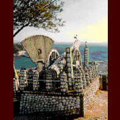

貝がら公園/愛知県南知多町

愛知県のベイエリア、知多・三河湾周辺は湾内に悪い水でも流れ込んでるのか、おもろスポットの宝庫となっている地域だ。
その中から今回は知多半島先端に近い貝がら公園をエントリー。
ここは白龍山といって元々白蛇を奉ってあった普通の山だった。ところがある日、ある老人が夢のお告げで祠をつくり始めた。
その後、祠の周辺は彼によって貝殻でデコレーションされ、ついに20年がかりで現在の姿にあいなった（完成かどうかは不明。ちなみに私が行ったときにも現在の公園の管理者となっているご子息が公園のなかをフラフラしていてまだまだ何かやってくれそうな雰囲気ではあった）。
とにかく貝殻のオンパレードである。
この公園（というか神社）のおもな施設はほとんどコンクリートに貝殻が張り付けてあるもので、神社の鳥居や公園のテーブル、ベンチまで貝殻づくしでちょっとお尻がいたい。
また鳥居の裏や駒寄（神社によくある並んで柱が建ってるヤツ）に協力者やスポンサーの名前がすべて貝殻で作られている。
しかしホントに名鉄や知多バスが金出したのかね。
この貝殻で字を作る手法に気を良くしたかオヤジ、あづま屋の柱にも「白龍山のおじいさん人もよければきだてよし」などの謎のメッセージを大量に発信し始めた。
「若人よ明治につづけど根性」のメッセージが泣かせる大砲も秀作。その他、龍宮城のような船やヘンなオブジェが満載。
貝殻にとり憑かれた親子のインディーズ魂がビシビシと伝わってくる思いだ。ぜひ行くべし。
ちなみに山の麓からの階段も自家製。結構きついよ。
1997.4.
珍寺大道場 HOME